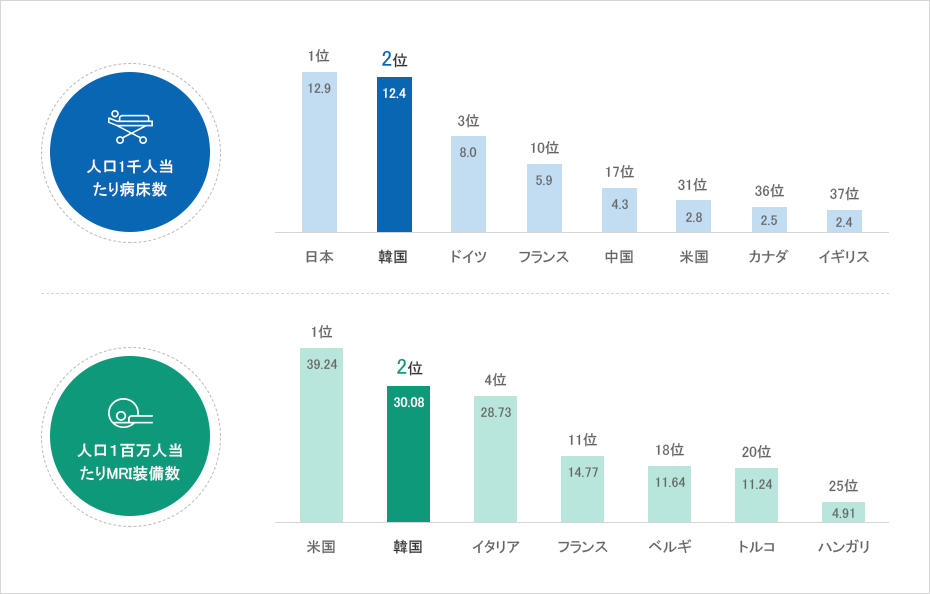
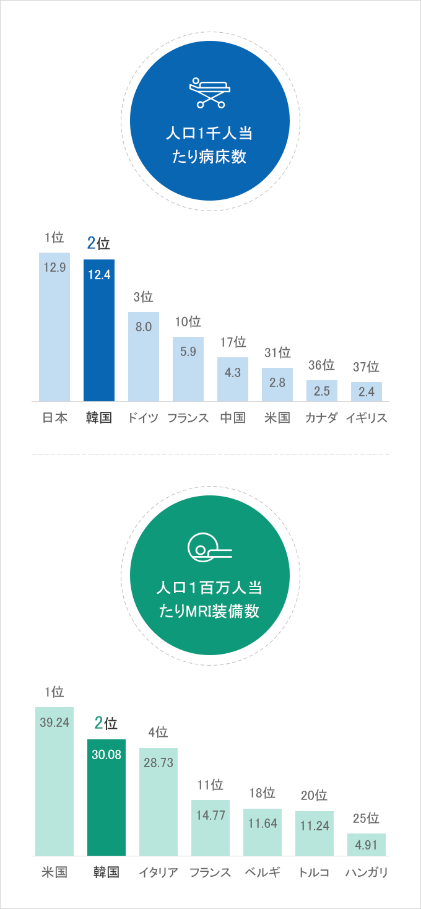

医療
- Home
- Why KOREA
- インフラ
- 医療
医療ハブへの跳躍
韓国の人口1千人当たりの病床数は１2.4床で、世界2位の高い水準となっている。
世界最高水準のヘルスケアと医療サービスを備えた韓国は健康で活気に満ちた医療・バイオのビジネス生態系を保有している。
世界最高水準のヘルスケアと医療サービスを備えた韓国は健康で活気に満ちた医療・バイオのビジネス生態系を保有している。



人口1千人当たり病床数 : 1位 日本 12.9, 2位 韓国 12.4, 3位 ドイツ 8.0, 10位 フランス 5.9, 17位 中国 4.3, 31位 米国 2.8, 36位 カナダ 2.5, 37位 イギリス 2.4
人口１百万人当たりMRI装備数 : 1位 米国 39.24, 2位 韓国 30.08, イタリア 4位 28.73, 11位 フランス 14.77, 18位 ベルギー 11.64, 20位 トルコ 11.24, 25位 ハンガリー 4.91

※ 出所 : OECD (2020)